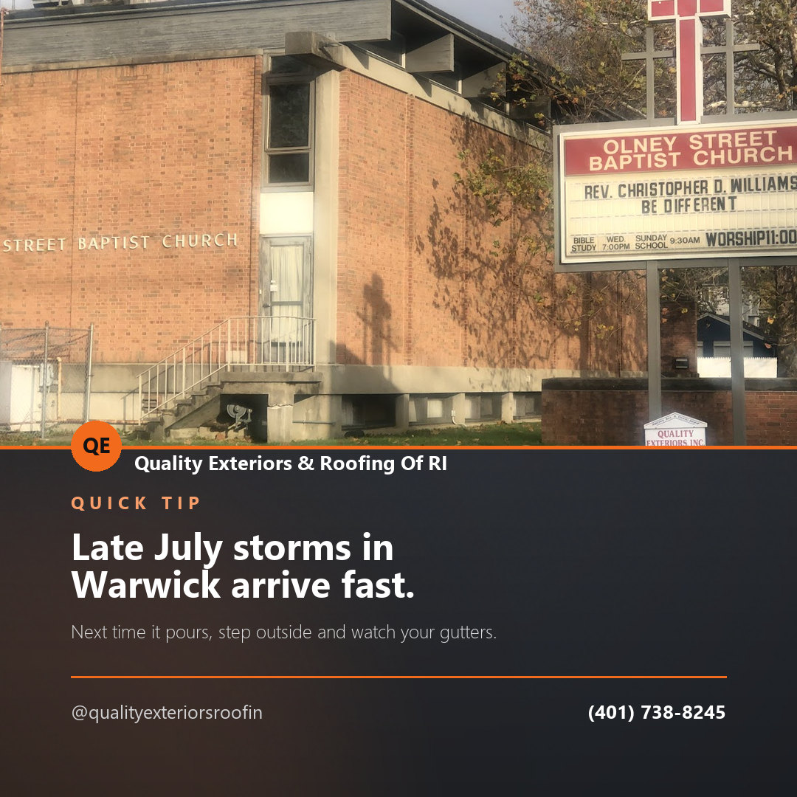
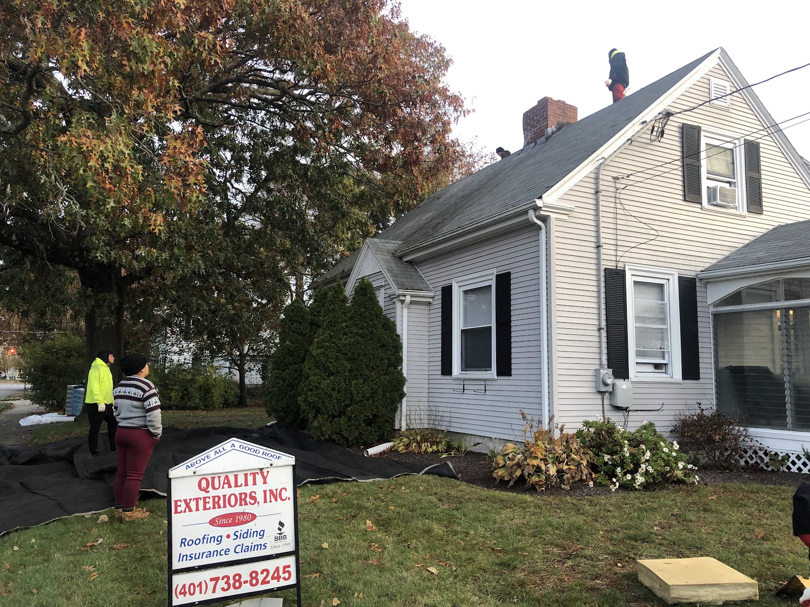
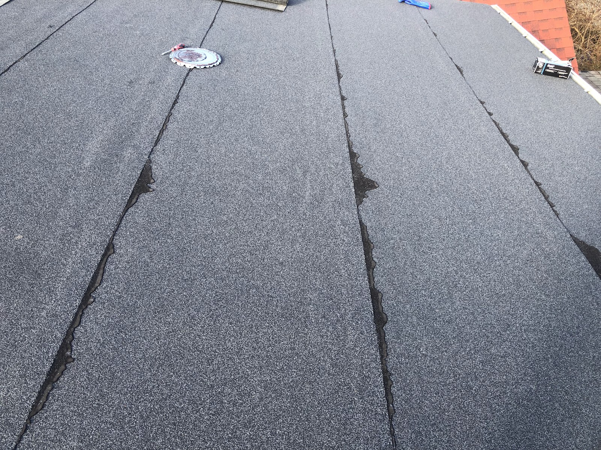

Seasonal tip · Facebook
Late July storms in Warwick arrive fast. Next time it pours, step outside and watch your gutters. Water sheeting over the front edge instead of running down the downspout means a clog, not heavy rain.
Quality Exteriors & Roofing Of RI is a roofing contractor working out of Cady Avenue in Warwick. Fifty-nine customers have rated the work 4.7 out of 5 on Google. Everything below is their own photography.
A roof is a decision most people make once or twice in the time they own a house. There is not much to say about it that a picture of the finished job does not say better, so here are theirs, big enough to actually look at.


The more you can describe up front, the shorter the visit and the faster you get a number. Roughly how old the roof is, whether you are seeing a stain inside or missing shingles outside, whether it followed a storm, and whether you are after a repair or a full replacement.
Describe what the roof is doing and where. If it is a repair, say so — if it is time for the whole thing, say that instead.
(401) 738-8245Content